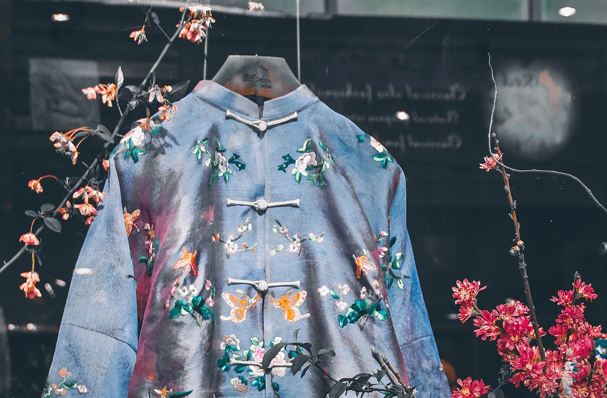
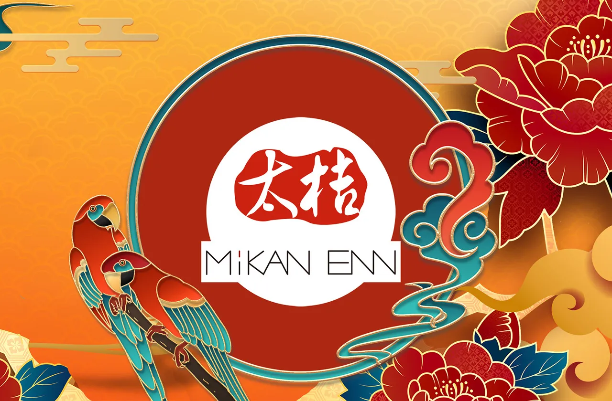
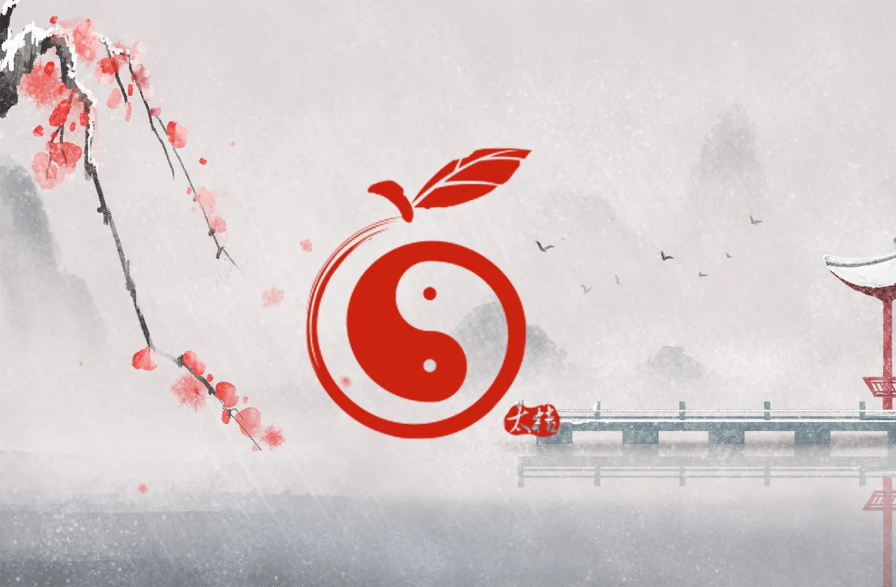
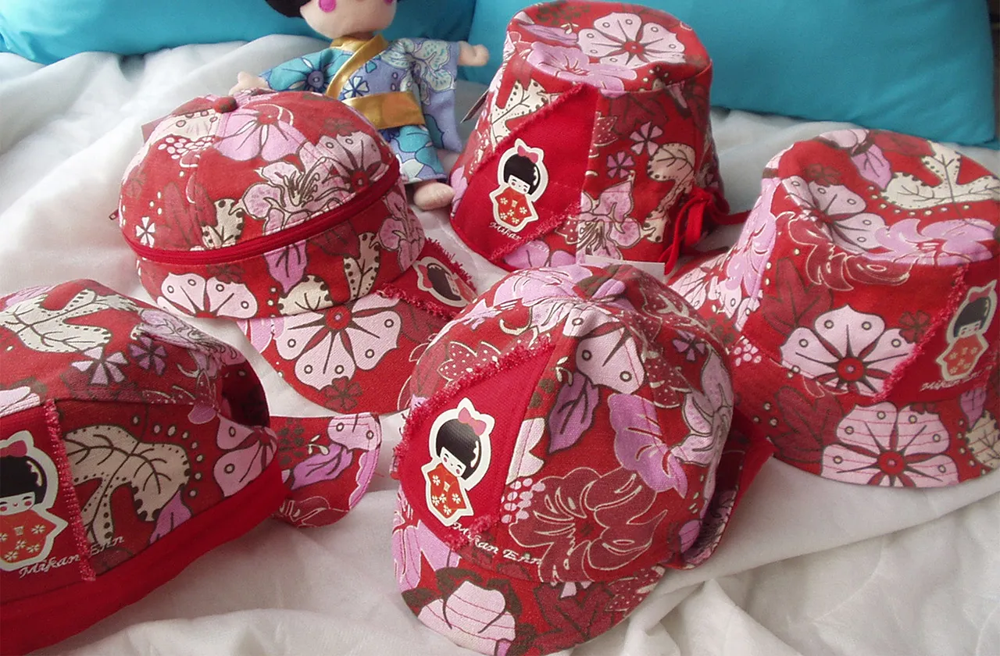

中華傳統文化風格
五千年傳承演進，古雅含蓄、對稱和諧、意境深遠、典雅莊重。

日本傳統文化風格
東瀛文化，簡約留白、侘寂之美、自然含蓄、靜謐雅致。

東南亞傳統文化風格
東南亞文化，色彩濃烈、自然熱帶、紋樣繁複、神秘奔放。

fingerprint品牌緣由
當東方民族風不再停留於歷史的靜態符號，而化為流動於城市街景中的風格語言，「太桔」因應而生。我們以當代審美重新詮釋東方民族風服飾，使文化不僅被凝視，更被穿著、被體驗，成為日常生活的一部分。
我們以當代審美重新詮釋東方民族風服飾，使文化不僅被凝視，更被穿著、被體驗，成為日常生活的一部分。太桔專為18至45歲族群打造，堅信東方民族風不等同於復古與拘謹，而是一種兼具底蘊與時尚的當代態度。我們從東方設計的秩序之美、山水意境的留白哲思，以及傳統紋樣的節奏韻律中汲取靈感，使東方民族風服飾在現代城市語境中煥發新生。無論通勤、社交或日常漫步，皆能從容展現含蓄而鮮明的風格態度。
「太桔」期許成為陪伴你成長的風格夥伴，讓東方民族風服飾不只是穿搭選擇，更是文化自信與個人品味的深刻表達。

fingerprint品牌簡介
「太桔」為品牌之中文名，其語音靈感源自中華太極，以諧音轉化而成，寓意陰陽和合、動靜相生的東方哲思。太極所象徵的圓融與平衡，不僅代表天地萬物的和諧秩序，也象徵設計在傳統與現代之間流動轉化的美學精神。太桔二字既蘊含文化意象，又帶有自然果實的溫潤與生命力，使品牌形象在東方哲學與生活趣味之間取得巧妙平衡。
品牌英文名「MIKAN ENN」，則源自日文「みかん えん」，意指橘子遊樂園。以羅馬拼音轉寫為英文形式，不僅保留日語發音的韻律感，也呈現輕盈活潑的文化氣息。
橘子象徵溫暖、豐收與分享，而遊樂園則寓意創意、想像與自由探索。兩者結合，使品牌如同一座充滿色彩與靈感的樂園，在東方文化與設計美學之間，展開一場富有想像力的現代與傳統創作旅程。

fingerprint品牌CIS
品牌 LOGO 以一枚象徵圓滿與生機的橘子為靈感，造型融合陰陽太極的結構意象，化作一枚兼具東方神韻與當代設計語感的象徵圖騰。圓形之勢，如天地循環、萬物流轉，在視覺之中呈現陰陽互生、動靜相融的哲學意境。
橘子在華人文化中常寓意「大吉大利」，象徵豐收、喜悅與吉祥之意；而太極圖式則代表宇宙萬象的平衡與和合，是東方文化中最具象徵性的哲思符號。
兩者相互融合，使標誌既保留民俗文化的溫潤底蘊，又展現簡約而富含意境的設計語言。整體形象彷彿一枚蘊藏文化能量的印記，在傳統與現代之間流轉，凝聚出屬於品牌的神秘氣質與美學風格。

fingerprint品牌CIS延伸
「顛覆與解構」，是對既有東方傳統形象的一次重新凝視與再度書寫。設計以古老圖騰與文化符號為基底，透過線條重組與結構拆解，使沉靜於歷史之中的意象重新甦醒。在鮮明而富有張力的表現之中，傳統不再只是被保存的符號，而是被重新詮釋的創作語言，使其在當代視覺語境中煥發出年輕而自由的生命力。
「反差與對比」，則構成設計美學的重要層次。老舊與現代、古典與創新，在時間的跨度中彼此對望，形成豐富而深刻的文化張力。設計並非單純的衝突，而是在差異之中尋求平衡，在異質之中追求融合。透過這種跨越年代與文化語境的對話，使不同時代的美學在同一畫面中共存，既保留歷史的深度，也展現當代對於創新設計的精神。